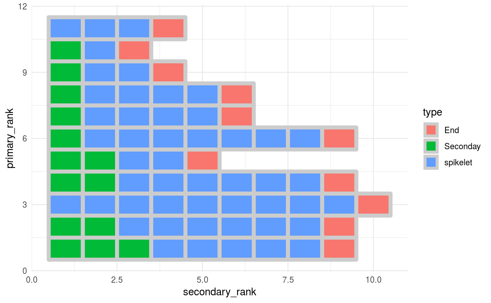
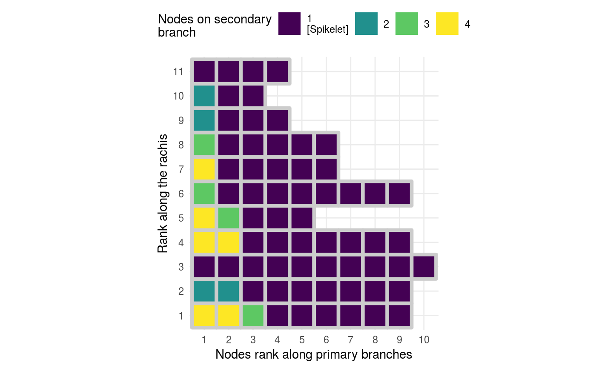

03 - Visualize The Topology of a Panicle
Otho Mantegazza
2019-02-26
Source:vignettes/03-dot-plot.Rmd
03-dot-plot.RmdSetup
library(dplyr)
library(magrittr)
library(igraph)
library(ggraph)
library(ptrapr)
library(forcats)
library(stringr)
# panicle graphs look better with ggplot2's theme minimal
theme_set(theme_minimal())Intro / get data
In this Vignette you will learn how to visualize the panicle stucture, with some simple plots that highlight important features such as the number of spikelets, the number of branches and their topology.
We provide the R objects good_panicle and inverted_panicle which store a panicle graph that has been already parsed in R. If you want to learn how to parse panicle XML files, please read the Vignette “Load Panicles into R”.
Access sample panicle data with:
data(good_panicle)
data(inverted_panicle)Before you use the panicle graph in inverted_panicle, you must invert it with invert_edges().
Plot the Panicle Graph
The most basic way to inspect a panicle graph by plotting it with the functions provided by ggraph.
We provide a wrapper in the function plot_panicle(), this is what that function does and how you can adjust the resulting plot. The function plot_panicle() plots a panicle graph with the functions ggraph(), geom_edge_link() and geom_node_point(); see those elements in action below.
# set a basic point size to represent the nodes,
# so that the graph elements (nodes and edges)
# do not overlap with each others.
point_size <- 1.8
good_panicle %>%
ggraph(layout = "nicely") + # nicely is just a default layout
geom_edge_link(
arrow = grid::arrow( # represent edges as arrows
length = grid::unit(0.06, "inches"),
type = "closed"),
colour = "grey30", # set a nice colour for the edges
end_cap = ggraph::circle(point_size/2, "mm"), # thanks to the parameters end_cap and
start_cap = ggraph::circle(point_size/2, "mm") # start_cap, the edge arrows do not
# overlap with the nodes
) +
geom_node_point( # represent the nodes as points
ggplot2::aes_string(colour = "type"), # colours as node hierarchy (primary etc.)
size = point_size,
alpha =.9) +
coord_fixed() # fix x and y ratio, since the coordinates are real measurements
Inspect Branching with a Dot Plot
In order to visualize and inspect primary and secondary branching, we suggest you to represent your data with a tile plot. We have learned about this representation in this paper by Fujishiro et al.. We suggest this plot because it highlights the number and position of primary and secondary branches in a direct and intuitive way.
To achieve this, first you will have to extract features from the panicle graph and put them in a data frame
Extract a data frame from the graph with panicle_tibble()
To extract data from a panicle graph and store it in a convenient dataframe, we provide the panicle_tibble() function. You can use it this way:
pan_tibble <-
good_panicle %>%
panicle_tibble()You can use the panicle_tibble() function to get panicle features stored in a dataframe. This dataframe stores each node of the original panicle in the rows and it has four columns, corresponding to 4 different features:
-
type: Along that primary branch, the identity of each node. (Secondary, Spikelet or End). -
nodes_downstream: how many nodes are downstream that node. -
secondary_rank: the rank of that node along the primary branch on which that nodes sits. Starting fro, the base of that branch. -
primary_rank: the rank of the primary branch on which that node sits (primary branches are ranked along the rachis starting from the base of the panicle).
Visulize with a tileplot
This dataframe is ready to be visualized with ggplot2.
We provide the function panicle_tileplot() to plot panicle topology. But we strongly suggest that you design your own plotting functions. Only by designing your own plot function your graphical visualization will be versatile enough to let you explore multiple panicle datasets.
Here we provide some examples:
panicle_tileplot is just a wrapper around ggplot2, this is how it works.
p <-
pan_tibble %>%
ggplot(aes(x = secondary_rank,
y = primary_rank,
fill = type)) +
geom_tile(colour = "grey80",
size = 2)
p
You can update the plot and display the number of nodes (Spikelets and tertiary branches) downstream a secondary branch node
p2 <- p +
geom_text(data = . %>%
filter(type == "Seconday"), # Show the number for secondary nodes
aes(label = nodes_downstream),
colour = "grey40",
fontface = "bold")
p2
Above we map the colors to the node type (End, Secondary, Spikelet), but you can also map the colors to the number nodes produced by secondary branches.
p3 <-
pan_tibble %>%
# use as.character %>% as_factor() to turn a continuous variable
# into a categorical one.
# because node ranks look better if plotted as categorical
ggplot(aes(x = secondary_rank %>% as.character() %>% as_factor(),
y = primary_rank %>% as.character() %>% as_factor(),
fill = nodes_downstream)) + # nodes on 2ndary branches to fill colours
geom_tile(colour = "grey80",
size = 1.5) +
geom_text(data = . %>%
filter(type == "Seconday"), # Show the number for secondary nodes
aes(label = nodes_downstream),
colour = "grey30",
fontface = "bold",
size = 5) +
# fixed xy ratio, each tile is a square
coord_fixed() +
# set scale of colours and
# proper labels for the colour scales
scale_fill_viridis(breaks = function(limits) c(0, 2:max(limits)),
labels = function(breaks) case_when(breaks == 0 ~ "1\n[Spikelet]",
TRUE ~ as.character(breaks)),
guide = guide_legend(nrow = 1,
keyheight = unit(7, units = "mm"),
keywidth=unit(7, units = "mm"),
override.aes = list(size = 0))) +
# fill guide on top
theme(legend.position = "top") +
# Clear axis names
labs(x = "Nodes rank along primary branches",
y = "Rank along the rachis",
fill = str_wrap("Nodes on secondary branch", width = 20))
p3